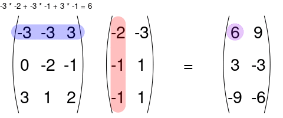
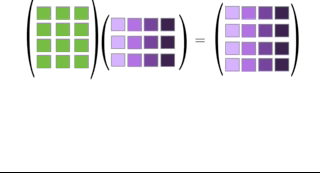
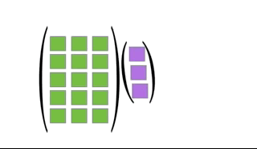

A vector is a list of numbers.
\[ \mathbf{x} = \left( \begin{array}{c} 10\\ 3\\ 5 \end{array} \right) \]
In the above vector, the first element is 10, the second is 3, and the third is 5. Or, using subscripts to denote indices, we have \[ x_1 = 10,~x_2 = 3, \text{ and } x_3 = 5. \]
Vectors are ordered, so \[ \left( \begin{array}{c} 10\\ 3\\ 5 \end{array} \right) \neq \left( \begin{array}{c} 3\\ 10\\ 5 \end{array} \right). \]
I will generally use bold, lower-case letters to represent vectors.
A matrix is a rectangular array of numbers.
\[ \mathbf{A} = \left( \begin{array}{cc} -1 & 4\\ 11 & -4\\ 2 & 8 \end{array} \right) \]
The dimension of a matrix is the number of rows and columns of that matrix. So the dimension of the above matrix is \(3\times 2\) since it has three rows and two columns.
We index elements by the rows first, then the columns second. For example, in the above matrix, the \((1, 1)\)th element is -1, the \((1, 2)\)th element is 4, the \((2, 1)\)th element is 11, the \((2,2)\)th element is -4, the \((3, 1)\)th element is 2, and the \((3,2)\)th element is 8. Or, using subscripts as indices we have \[ a_{11} = -1,~a_{12} = 4,~a_{21}=11,~a_{22}=-4,~a_{31} = 2,\text{ and } a_{32}=8. \]
I will generally use bold, upper-case letters to represent matrices.
A vector is just a matrix with one column.
The transpose of a matrix/vector swaps the row and column indices.
\[\begin{align} \mathbf{x}^T &= (10, 3, 5)\\ \mathbf{A}^T &= \left( \begin{array}{ccc} -1 & 11 & 2\\ 4 & -4 & 8 \end{array} \right) \end{align}\]
You can add two matrices together as long as they have the same dimensions. You just sum up the values element-wise:
\[ \left( \begin{array}{cc} 1 & 2 \\ 3 & 4 \end{array} \right) + \left( \begin{array}{cc} 5 & 6 \\ 7 & 8 \end{array} \right) = \left( \begin{array}{cc} 6 & 8 \\ 10 & 12 \end{array} \right) \]
You can multiply a matrix by a scalar, where you multiply each element of that matrix by that scalar. \[ 2\mathbf{A} = 2 \left( \begin{array}{cc} -1 & 4\\ 11 & -4\\ 2 & 8 \end{array} \right) = \left( \begin{array}{cc} 2 \times -1 & 2 \times 4\\ 2 \times 11 & 2 \times -4\\ 2 \times 2 & 2 \times8 \end{array} \right) = \left( \begin{array}{cc} -2 & 8\\ 22 & -8\\ 4 & 16 \end{array} \right) \]
You can multiply two matrices together as long as the left matrix has the same number of columns as the number or rows of the right matrix. The rules for matrix multiplication are kinda weird (but they are justified if you ever take linear algebra). In effect, you multiply the row of the left matrix with the column of the right matrix, and add up the resulting multiplied numbers:

An awesome visualization from Shaina Race does a better job of illustrating this:

The special case of a matrix multiplied by a vector is below (also from Shaina Race):

Exercise: Let \[\begin{align} \mathbf{X} &= \left( \begin{array}{cc} 3 & -1\\ 1 & -2 \end{array} \right)\\ \mathbf{Y} &= \left( \begin{array}{cc} 1 & 2\\ 2 & 1 \end{array} \right) \end{align}\] Calculate \(\mathbf{X}^T\mathbf{Y}\).
Note that matrix multiplication is generally not commutative. That is \[ \mathbf{A}\mathbf{B} \neq \mathbf{B}\mathbf{A} \] Indeed, even if \(\mathbf{A}\mathbf{B}\) exists does not mean that \(\mathbf{B}\mathbf{A}\) exists. E.g. Suppose \(\mathbf{A}\) is \(2 \times 3\) and \(\mathbf{B}\) is \(3 \times 4\).
The identity matrix is the diagonal matrix with 1’s in the diagonal. It is the matrix analogue to the number 1. For example, the \(3 \times 3\) diagonal matrix is
\[ \mathbf{I}_3 = \left( \begin{array}{ccc} 1 & 0 & 0 \\ 0 & 1 & 0 \\ 0 & 0 & 1 \end{array} \right) \]
For any matrix \(\mathbf{A}\) of dimension \(n \times p\), we have \[ \mathbf{I}_n\mathbf{A} = \mathbf{A}\mathbf{I}_p = \mathbf{A} \]
Exercise: Verify that \[ \left( \begin{array}{cc} 1 & 0 \\ 0 & 1 \end{array} \right) \left( \begin{array}{cc} a & b \\ c & d \end{array} \right) = \left( \begin{array}{cc} a & b \\ c & d \end{array} \right) \left( \begin{array}{cc} 1 & 0 \\ 0 & 1 \end{array} \right) = \left( \begin{array}{cc} a & b \\ c & d \end{array} \right) \]
The \(n\)-vector of all \(1\)’s is usually denoted \(\mathbf{1}_n\) \[ \mathbf{1}_n = \left( \begin{array}{c} 1 \\ 1 \\ \vdots\\ 1 \end{array} \right) \]
The \(n\times p\) matrix of all \(1\)’s is usually denoted \(\mathbf{J}_{n\times p}\). \[ \mathbf{J}_{n\times p} = \left( \begin{array}{ccc} 1 & \cdots & 1\\ \vdots & \ddots & \vdots\\ 1 & \cdots & 1 \end{array} \right) \]
The \(n\)-vector of all \(0\)’s is usually denoted \(\mathbf{0}_n\). \[ \mathbf{0}_n = \left( \begin{array}{c} 0 \\ 0 \\ \vdots\\ 0 \end{array} \right) \]
Exercise: What is \(\mathbf{1}_n\mathbf{1}_n^T\)? What is \(\mathbf{1}_n^T\mathbf{1}_n\)?
The inverse of a scalar is its reciprocal. E.g. the inverse of 5 is \(\frac{1}{5}\). A number multiplied by its inverse is 1 \[ 5 \times \frac{1}{5} = 1 \]
There is a concept of an inverse in linear algebra as well. Wheen you multiply a matrix by its inverse, you obtain the identity matrix \(\mathbf{I}\).
Only square matrices (the number of rows equals the number of columns) may have inverses.
Not all square matrices have an inverse.
When a square matrix has an inverse, it is unique.
If \(\mathbf{A}\) is an \(r \times r\) square matrix, then we denote the inverse of \(\mathbf{A}\) as \(\mathbf{A}^{-1}\). It is the unique \(r \times r\) matrix such that \[ \mathbf{A}\mathbf{A}^{-1} = \mathbf{A}^{-1}\mathbf{A} = \mathbf{I}_r \]
Example: The inverse of \[ \mathbf{A} = \left( \begin{array}{cc} 2 & 4\\ 3 & 1 \end{array} \right) \] is \[ \mathbf{A}^{-1} = \left( \begin{array}{cc} -0.1 & 0.4\\ 0.3 & -0.2 \end{array} \right) \]
The formula for an inverse matrix is complicated, and not something you need to know for regression (just use a computer).
Inverse matrices allow us to solve systems of equations. Suppose we have \[ \mathbf{A}\mathbf{Y} = \mathbf{C} \] and we want to solve for \(\mathbf{Y}\). Then we can premultiply (multiply on the left) both the left and right equations by \(\mathbf{A}^{-1}\) to obtain \[\begin{align} \mathbf{A}^{-1}\mathbf{A}\mathbf{Y} &= \mathbf{A}^{-1}\mathbf{C}\\ \Rightarrow \mathbf{I}\mathbf{Y} &= \mathbf{A}^{-1}\mathbf{C}\\ \Rightarrow \mathbf{Y} &= \mathbf{A}^{-1}\mathbf{C}. \end{align}\]
The matrix inverse does not exist if there is redundant information between the columns in the matrix.
Formally, vectors \(\mathbf{a}_1,\mathbf{a}_2,\ldots,\mathbf{a}_p\) are linearly dependent if there exist scalars \(k_1, k_2,\ldots, k_p\) (not all zero) such that \[ k_1\mathbf{a}_1 + k_2\mathbf{a}_2 + \cdots k_p \mathbf{a}_p = \mathbf{0} \]
I.e., you can write one vector in terms of the other vectors.
Example: Let \[\begin{align} \mathbf{a}_1 &= \left( \begin{array}{c} 1\\ 2\\ 3 \end{array} \right)\\ \mathbf{a}_2 &= \left( \begin{array}{c} -1\\ 3\\ 2 \end{array} \right)\\ \mathbf{a}_3 &= \left( \begin{array}{c} -3\\ -1\\ -4 \end{array} \right) \end{align}\] Then \(2\mathbf{a}_1 - \mathbf{a}_2 + \mathbf{a}_3 = \mathbf{0}_3\).
Vectors are linearly independent if there do not exist such constants (so each vector provides some new information).
The rank of the matrix is the maximum number of linearly independent columns in the matrix. (we treat each column as a vector).
Example: The rank of the following matrix is 2: \[ \mathbf{A} = \left( \begin{array}{ccc} 1 & -1 & -3\\ 2 & 3 & -1\\ 3 & 2 & -4 \end{array} \right) \]
The inverse of an \(r \times r\) square matrix \(\mathbf{A}\) exists if and only if the rank of \(\mathbf{A}\) is \(r\).
The maximum possible rank of an \(n \times p\) matrix is \(\min(n, p)\).
If \(\mathbf{C} = \mathbf{A}\mathbf{B}\), then the rank of \(\mathbf{C}\) is less than or equal to \(\min(\text{rank }\mathbf{A}, \text{rank }\mathbf{B})\).
This will show up when we put the covariates in an \(n \times p\) (\(n\) individuals and \(p\) variables) matrix \(\mathbf{X}\) and need to calculate the inverse of \(\mathbf{X}^T\mathbf{X}\), which is only possible if \(n \geq p\).
We can represent the simple linear regression model by arranging values in matrices.
Let \[\begin{align} \mathbf{y} &= \left( \begin{array}{c} Y_1\\ Y_2\\ \vdots\\ Y_n \end{array} \right),\\ \mathbf{X} &= \left( \begin{array}{cc} 1 & X_1\\ 1 & X_2\\ \vdots & \vdots\\ 1 & X_n \end{array} \right),\\ \mathbf{\beta} &= \left( \begin{array}{c} \beta_0\\ \beta_1 \end{array} \right),\\ \mathbf{\epsilon} &= \left( \begin{array}{c} \epsilon_1\\ \epsilon_2\\ \vdots\\ \epsilon_n \end{array} \right) \end{align}\]
Then we can represent the simple linear regression model in terms of these matrices \[ \mathbf{y} = \mathbf{X}\mathbf{\beta} + \mathbf{\epsilon} \] [demonstrate on white board]
Using expectation notation, we can say that \[ E[\mathbf{y}] = \left( \begin{array}{c} E[Y_1]\\ E[Y_2]\\ \vdots\\ E[Y_n] \end{array} \right) = \mathbf{X}\mathbf{\beta} \]
The column of \(1\)’s in \(\mathbf{X}\) can be seen of defining a variable \(X_0 = 1\) and then having \[ Y_i = \beta_0 X_0 + \beta_1 X_i + \epsilon_i \]
A random vector is a vector whose elements are random variables. So \(\mathbf{\epsilon}\) is a random vector.
The expected value of a random vector is a vector whose elements are the expected values of the elements of the random vector. So, for example \[ E[\mathbf{\epsilon}] = E\left[ \left( \begin{array}{c} \epsilon_1\\ \epsilon_2\\ \vdots\\ \epsilon_n \end{array} \right) \right] = \left( \begin{array}{c} E[\epsilon_1]\\ E[\epsilon_2]\\ \vdots\\ E[\epsilon_n] \end{array} \right) \]
We know, from the assumptions of the linear model, that \(E[\epsilon_i] = 0\) for all \(i\), and so \(E[\mathbf{\epsilon}] = \mathbf{0}_n\).
We can concisely express the variances and covariances between all elements of a random vector in terms of the variance-covariance matrix (often just called the covariance matrix). \[ cov(\mathbf{\epsilon}) = \left( \begin{array}{cccc} var(\epsilon_1) & cov(\epsilon_1, \epsilon_2) & \cdots & cov(\epsilon_1, \epsilon_n)\\ cov(\epsilon_2, \epsilon_1) & var(\epsilon_2) & \cdots & cov(\epsilon_2, \epsilon_n)\\ \vdots & \vdots & \ddots & \vdots\\ cov(\epsilon_n, \epsilon_1) & cov(\epsilon_n, \epsilon_2) & \cdots & var(\epsilon_n) \end{array} \right) \]
Since we know, from the assumptions of the linear model, that \(var(\epsilon_i) = \sigma^2\) for all \(i\) (equal variance assumption) and \(cov(\epsilon_i, \epsilon_j) = 0\) for all \(i \neq j\) (independence assumption), we have that \[ cov(\mathbf{\epsilon}_i) = \sigma^2\mathbf{I}_n \]
We frequently encounter a random vector \(\mathbf{w}\) that is obtained by premultiplying a random vector \(\mathbf{y}\) by a matrix \(\mathbf{A}\). \[ \mathbf{w} = \mathbf{A}\mathbf{y} \]
Then \[ cov(\mathbf{w}) = \mathbf{A}cov(\mathbf{y})\mathbf{A}^T \]
Let’s calculate together the mean and covariance of the random vector \(\mathbf{y}\) [on the white board].
The simple linear model can be fully expressed with assumptions via \[\begin{align} \mathbf{y} &= \mathbf{X}\mathbf{\beta} + \mathbf{\epsilon}\\ E[\mathbf{\epsilon}] &= \mathbf{0}_n\\ cov(\mathbf{\epsilon}) &= \sigma^2\mathbf{I}_n \end{align}\]
For the normal linear model (important only for prediction intervals), you further assume that \(\mathbf{\epsilon}\) is distributed according to the multivariate normal distribution.
\[ \mathbf{Y}^T\mathbf{Y} = \sum_{i=1}^nY_i^2 \]
\[ \mathbf{X}^T\mathbf{X} = \left( \begin{array}{cc} n & \sum_{i=1}^nX_i\\ \sum_{i=1}^nX_i & \sum_{i=1}^nX_i^2 \end{array} \right) \]
\[ \mathbf{X}^T\mathbf{Y} = \left( \begin{array}{c} \sum_{i=1}^n Y_i\\ \sum_{i=1}^n X_iY_i\\ \end{array} \right) \]
You can show that the estimated regression coefficients are \[ \hat{\mathbf{\beta}} = (\mathbf{X}^T\mathbf{X})^{-1}\mathbf{X}^T\mathbf{Y} \]
The fitted values are then \[ \hat{\mathbf{Y}} = \mathbf{X}\hat{\mathbf{\beta}} = \mathbf{X}(\mathbf{X}^T\mathbf{X})^{-1}\mathbf{X}^T\mathbf{Y} \]
The matrix \[ \mathbf{H} = \mathbf{X}(\mathbf{X}^T\mathbf{X})^{-1}\mathbf{X}^T \] transforms \(\mathbf{Y}\) to \(\hat{\mathbf{Y}}\) through premultiplication, and so is often called the hat matrix.
The hat matrix plays an important part in diagnostics (Chapter 10).
Exercise: Prove that the hat matrix is idempotent. That is \[ \mathbf{H}\mathbf{H} = \mathbf{H} \]
The residuals are \[ \mathbf{e} = \mathbf{Y} - \hat{\mathbf{Y}} = \mathbf{Y} - \mathbf{X}(\mathbf{X}^T\mathbf{X})^{-1}\mathbf{X}^T\mathbf{Y} = (\mathbf{I}_n - \mathbf{X}(\mathbf{X}^T\mathbf{X})^{-1}\mathbf{X}^T)\mathbf{Y} = (\mathbf{I}_n - \mathbf{H})\mathbf{Y}. \]
Exercise: What is the covariance matrix of the residuals? Are the residuals uncorrelated?
To obtain the standard errors of \(\hat{\beta}_0\) and \(\hat{\beta}_1\), we can just obtain the covariance matrix of \(\hat{\mathbf{\beta}}\). \[\begin{align} cov(\hat{\mathbf{\beta}}) &= cov((\mathbf{X}^T\mathbf{X})^{-1}\mathbf{X}^T\mathbf{Y})\\ &= (\mathbf{X}^T\mathbf{X})^{-1}\mathbf{X}^Tcov(\mathbf{Y})\mathbf{X}(\mathbf{X}^T\mathbf{X})^{-1}\\ &= (\mathbf{X}^T\mathbf{X})^{-1}\mathbf{X}^T\sigma^2\mathbf{I}_n\mathbf{X}(\mathbf{X}^T\mathbf{X})^{-1}\\ &= \sigma^2(\mathbf{X}^T\mathbf{X})^{-1}\mathbf{X}^T\mathbf{X}(\mathbf{X}^T\mathbf{X})^{-1}\\ &= \sigma^2(\mathbf{X}^T\mathbf{X})^{-1}. \end{align}\]
We estimate this variance covariance matrix with \[ s^2(\hat{\mathbf{\beta}}) = MSE(\mathbf{X}^T\mathbf{X})^{-1} \]
Similarly concise equations for standard errors exist for mean responses (\(s^2(\hat{Y}_h)\)) and predictions (\(s^2\{pred\}\)).
You create matrices with the matrix() function.
A <- matrix(c(1, 2, 3, 4, 5, 6), nrow = 3, ncol = 2)
A## [,1] [,2]
## [1,] 1 4
## [2,] 2 5
## [3,] 3 6Notice that the first column is populated first, then the second column, etc…
You can add/subtract/multiply/divide using a scalar with basic arithmetic operations.
2 + A## [,1] [,2]
## [1,] 3 6
## [2,] 4 7
## [3,] 5 82 - A## [,1] [,2]
## [1,] 1 -2
## [2,] 0 -3
## [3,] -1 -4A - 2## [,1] [,2]
## [1,] -1 2
## [2,] 0 3
## [3,] 1 42 * A## [,1] [,2]
## [1,] 2 8
## [2,] 4 10
## [3,] 6 12A / 2## [,1] [,2]
## [1,] 0.5 2.0
## [2,] 1.0 2.5
## [3,] 1.5 3.02 / A## [,1] [,2]
## [1,] 2.0000 0.5000
## [2,] 1.0000 0.4000
## [3,] 0.6667 0.3333Matrices can be element-wise added/sabtracted/multiplied/divided
using +/-/*// as
long as these matrices are the same dimension.
B <- matrix(c(7, 8, 9, 10, 11, 12), nrow = 3, ncol = 2)
B## [,1] [,2]
## [1,] 7 10
## [2,] 8 11
## [3,] 9 12A + B## [,1] [,2]
## [1,] 8 14
## [2,] 10 16
## [3,] 12 18A - B## [,1] [,2]
## [1,] -6 -6
## [2,] -6 -6
## [3,] -6 -6A * B## [,1] [,2]
## [1,] 7 40
## [2,] 16 55
## [3,] 27 72A / B## [,1] [,2]
## [1,] 0.1429 0.4000
## [2,] 0.2500 0.4545
## [3,] 0.3333 0.5000Matrix multiplication is performed using %*%. The
number of columns of the left matrix must equal the number of rows of
the right matrix.
C <- matrix(c(-1, 2, 1, 3), nrow = 2, ncol = 2)
C## [,1] [,2]
## [1,] -1 1
## [2,] 2 3A %*% C## [,1] [,2]
## [1,] 7 13
## [2,] 8 17
## [3,] 9 21The transpose of a matrix is calculated using
t().
t(A)## [,1] [,2] [,3]
## [1,] 1 2 3
## [2,] 4 5 6The inverse of a matrix is calculated using solve()
(remember, has to be a square matrix).
solve(C)## [,1] [,2]
## [1,] -0.6 0.2
## [2,] 0.4 0.2You can create the identity matrix using diag()
diag(x = 3)## [,1] [,2] [,3]
## [1,] 1 0 0
## [2,] 0 1 0
## [3,] 0 0 1You can create a matrix of 1’s by just giving
matrix() the number 1.
matrix(1, nrow = 2, ncol = 3)## [,1] [,2] [,3]
## [1,] 1 1 1
## [2,] 1 1 1Exercise: Suppose we have a response vector \(\mathbf{y}\) and a design matrix \(\mathbf{X}\) such that \[ \mathbf{y} = \left( \begin{array}{c} 7.8\\ 9.0\\ 10.2\\ 11.0\\ 11.7 \end{array} \right)\\ \mathbf{X} = \left( \begin{array}{cc} 1 & 8\\ 1 & 4\\ 1 & 0\\ 1 & -4\\ 1 & -8 \end{array} \right) \]
Use matrix methods to derive the estimated regression coefficients of
a regression of \(\mathbf{y}\) on \(\mathbf{X}\). Verify these estimates using
lm().